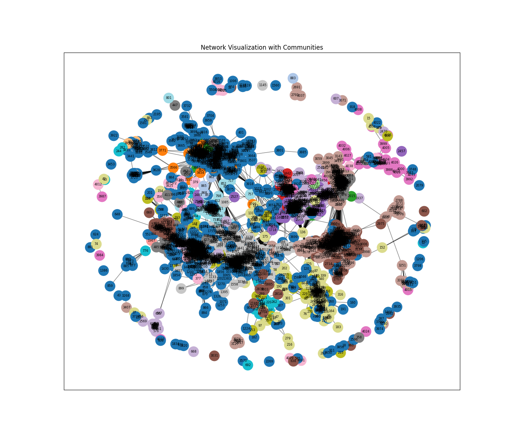

Project Overview
This project examines whether influencers within a Facebook community network also function as central nodes. It analyzes various network structures and investigates how different communities interact with one another.
Data Requirement
- Facebook Network Graph
- Facebook Cirlces
- Facebook Edge
- Facebook Ego
- Facebook Egofeat
- Facebook Feat
- Facebook Featnames
Network Analysis: Setup & Initial Graph
Python
# Install required libraries
!pip install networkx matplotlib
import networkx as nx
import matplotlib.pyplot as plt
# Step 1: Read the .txt file containing pairs of nodes
edges = []
# Read the file and extract pairs of nodes
with open("/content/network/facebook_combined.txt", "r") as file:
for line in file:
# Split each line into two nodes and append as a tuple
nodes = line.strip().split()
if len(nodes) == 2:
edges.append((int(nodes[0]), int(nodes[1])))
# Step 2: Create a graph from the edges
G = nx.Graph()
# Add edges to the graph
G.add_edges_from(edges)
# Step 3: Plot the network
plt.figure(figsize=(8, 6))
nx.draw(G, with_labels=False, node_size=30,
node_color='skyblue', edge_color='gray')
plt.title("Network Plot")
# Save the figure
plt.savefig("network_plot.png")
# Show the plot
plt.show()

File Categorization & Loaders
Python
import os
import pandas as pd
import networkx as nx
import matplotlib.pyplot as plt
# -------------------------------
# 1. Set your files directory
# -------------------------------
directory = "/content/network"
# -------------------------------
# 2. Categorize files by type
# -------------------------------
def categorize_files(directory):
file_types = {"CIRCLES": [], "EDGES": [], "EGOFEAT": [],
"FEAT": [], "FEATNAMES": [], "TXT": []}
for file in os.listdir(directory):
lower = file.lower()
path = os.path.join(directory, file)
if os.path.isdir(path):
continue
elif file.endswith(".txt") and "edge-nodes" in lower:
file_types["TXT"].append(file)
elif "circle" in lower:
file_types["CIRCLES"].append(file)
elif "edge" in lower:
file_types["EDGES"].append(file)
elif "egofeat" in lower:
file_types["EGOFEAT"].append(file)
elif "featnames" in lower:
file_types["FEATNAMES"].append(file)
elif "feat" in lower:
file_types["FEAT"].append(file)
return file_types
files_by_type = categorize_files(directory)
# -------------------------------
# 3. Load edges
# -------------------------------
def load_edges(file_list):
edges = []
for file in file_list:
df = pd.read_csv(os.path.join(directory, file), header=None)
for row in df.itertuples(index=False):
if len(row) == 1:
nodes = str(row[0]).split()
if len(nodes) == 2:
edges.append((nodes[0], nodes[1]))
elif len(row) >= 2:
edges.append((row[0], row[1]))
return edges
# -------------------------------
# 4. Load circles (communities)
# -------------------------------
def load_circles(file_list):
circles = []
for file in file_list:
df = pd.read_csv(os.path.join(directory, file), header=None)
for row in df.itertuples(index=False):
for circle_str in row:
parts = str(circle_str).split("\t")
if len(parts) > 1:
circle_nodes = parts[1:]
circles.append(circle_nodes)
return circles
Network Analysis: Features & Graph Assembly
Python
# -------------------------------
# 5. Load node features
# -------------------------------
def load_features(file_list):
features = {}
for file in file_list:
df = pd.read_csv(os.path.join(directory, file), header=None)
for row in df.itertuples(index=False):
for item in row:
parts = str(item).split()
if len(parts) > 1:
node = parts[0]
feat_values = [int(f) for f in parts[1:]]
features[node] = feat_values
return features
# -------------------------------
# 6. Load FEATNAMES
# -------------------------------
def load_featnames(file_list):
featnames = []
for file in file_list:
df = pd.read_csv(os.path.join(directory, file), header=None)
for row in df.itertuples(index=False):
for item in row:
featnames.append(str(item))
return featnames
# -------------------------------
# 7. Load all data
# -------------------------------
edges = load_edges(files_by_type["EDGES"]) + load_edges(files_by_type["TXT"])
circles = load_circles(files_by_type["CIRCLES"])
node_features = load_features(files_by_type["FEAT"])
ego_features = load_features(files_by_type["EGOFEAT"])
featnames = load_featnames(files_by_type["FEATNAMES"])
# -------------------------------
# 8. Build the graph
# -------------------------------
G = nx.Graph()
G.add_edges_from(edges)
for node in node_features.keys():
if node not in G:
G.add_node(node)
for node in ego_features.keys():
if node not in G:
G.add_node(node)
# -------------------------------
# 9. Add node features
# -------------------------------
for node, feats in node_features.items():
for i, val in enumerate(feats):
feature_name = featnames[i] if i < len(featnames) else f"feature_{i}"
G.nodes[node][feature_name] = val
for node, feats in ego_features.items():
G.nodes[node]["ego_features"] = feats
# -------------------------------
# 10. Add communities
# -------------------------------
for i, community in enumerate(circles):
for node in community:
if node not in G:
G.add_node(node)
G.nodes[node]["community"] = i
Network Visualization
Python

# -------------------------------
# 11. Visualize network
# -------------------------------
plt.figure(figsize=(14,12))
pos = nx.spring_layout(G, seed=42)
node_colors = [G.nodes[n].get("community", -1) for n in G.nodes()]
nx.draw_networkx_nodes(G, pos, node_size=400,
cmap=plt.cm.tab20,
node_color=node_colors)
nx.draw_networkx_edges(G, pos, alpha=0.5)
nx.draw_networkx_labels(G, pos, font_size=6)
plt.title("Network Visualization with Communities")
# Save the figure
plt.savefig("Communities.png")
plt.show()
Centrality Analysis
Python
# -------------------------------
# 12. Basic network info
# -------------------------------
print(f"Graph has {len(G.nodes())} nodes and {len(G.edges())} edges.")
num_communities = len(set(node_colors)) - (1 if -1 in node_colors else 0)
print(f"Number of communities detected: {num_communities}")
# -------------------------------
# 13. Network analysis
# -------------------------------
# Degree centrality
deg_cent = nx.degree_centrality(G)
top_deg = sorted(deg_cent.items(), key=lambda x: x[1], reverse=True)[:10]
print("Top 10 nodes by degree centrality:", top_deg)
# Betweenness centrality
bet_cent = nx.betweenness_centrality(G)
top_bet = sorted(bet_cent.items(), key=lambda x: x[1], reverse=True)[:10]
print("Top 10 nodes by betweenness centrality:", top_bet)
# Closeness centrality
close_cent = nx.closeness_centrality(G)
top_close = sorted(close_cent.items(), key=lambda x: x[1], reverse=True)[:10]
print("Top 10 nodes by closeness centrality:", top_close)
# Eigenvector centrality
try:
eig_cent = nx.eigenvector_centrality(G, max_iter=500)
top_eig = sorted(eig_cent.items(), key=lambda x: x[1], reverse=True)[:10]
print("Top 10 nodes by eigenvector centrality:", top_eig)
except nx.NetworkXError:
print("Eigenvector centrality did not converge.")
Network Analysis: Communities, Influence & Segmentation
Python
# -------------------------------
# 14. Community sizes
# -------------------------------
from collections import Counter
community_nodes = [G.nodes[n].get("community", -1) for n in G.nodes()]
community_count = Counter(community_nodes)
print("Community sizes:", community_count)
# 1) Influential nodes
# Top influential nodes by degree
top_influential_deg = sorted(nx.degree_centrality(G).items(),
key=lambda x: x[1],
reverse=True)[:10]
print("Top 10 influential nodes (degree):", top_influential_deg)
# Top influential nodes by eigenvector centrality
try:
top_influential_eig = sorted(
nx.eigenvector_centrality(G, max_iter=500).items(),
key=lambda x: x[1],
reverse=True)[:10]
print("Top 10 influential nodes (eigenvector):", top_influential_eig)
except nx.NetworkXError:
print("Eigenvector centrality did not converge")
# 2) Central nodes
# Closeness centrality
top_central_close = sorted(nx.closeness_centrality(G).items(),
key=lambda x: x[1],
reverse=True)[:10]
print("Top 10 central nodes (closeness):", top_central_close)
# Betweenness centrality
top_central_bet = sorted(nx.betweenness_centrality(G).items(),
key=lambda x: x[1],
reverse=True)[:10]
print("Top 10 central nodes (betweenness):", top_central_bet)
# 3) Bridge connector nodes
bridge_nodes = []
bet_cent = nx.betweenness_centrality(G)
for node in G.nodes():
communities = set([G.nodes[n].get("community", -1)
for n in G.neighbors(node)])
if len(communities) > 1:
bridge_nodes.append((node, len(communities), bet_cent[node]))
bridge_nodes_sorted = sorted(bridge_nodes,
key=lambda x: x[2],
reverse=True)
print("Top bridge nodes connecting multiple communities:",
bridge_nodes_sorted[:10])
# 4) Number of nodes and edges
num_nodes = G.number_of_nodes()
num_edges = G.number_of_edges()
print(f"Number of nodes: {num_nodes}, Number of edges: {num_edges}")
# 5) Average degree
avg_degree = sum(dict(G.degree()).values()) / num_nodes
print(f"Average degree: {avg_degree:.2f}")
# 6) Degree distribution
degrees = [d for n, d in G.degree()]
plt.figure(figsize=(8,5))
plt.hist(degrees, bins=20, color='skyblue', edgecolor='black')
plt.title("Degree Distribution")
plt.xlabel("Degree")
plt.ylabel("Number of Nodes")
# Save the figure
plt.savefig("Degree_distribution.png")
plt.show()
# 7) Clusters within network
from networkx.algorithms import community
clusters = list(community.greedy_modularity_communities(G))
print(f"Number of clusters detected: {len(clusters)}")
for i, c in enumerate(clusters[:5]):
print(f"Cluster {i+1} size: {len(c)}")
# 8) Are communities based on age, fashion, education, fitness, tech?
categories = ['birthday','education','gender','hometown',
'languages','last_name','work','location']
community_scores = {}
for i, community_nodes in enumerate(clusters):
scores = {cat: 0 for cat in categories}
for node in community_nodes:
for j, feat in enumerate(G.nodes[node]):
for cat in categories:
if cat in str(feat).lower():
scores[cat] += G.nodes[node].get(feat, 0)
community_scores[f"Community_{i}"] = scores
for comm, sc in community_scores.items():
print(comm, sc)
# 9) Market segmentation
market_segments = {}
for comm, sc in community_scores.items():
dominant_cat = max(sc, key=sc.get)
market_segments[comm] = dominant_cat
print("Market Segments per Community:", market_segments)
# 10) Number of followers
followers = dict(G.degree())
top_followers = sorted(followers.items(),
key=lambda x: x[1],
reverse=True)[:10]
print("Top 10 nodes by number of followers:", top_followers)
Network Analysis: Node Roles & Visualizations
Python
# 11) Compare popularity and structural influence
comparison = []
for node in G.nodes():
degree = G.degree(node)
bet = bet_cent[node]
comparison.append((node, degree, bet))
comparison_sorted = sorted(comparison, key=lambda x: x[2], reverse=True)
print("Top 10 nodes by structural influence vs popularity:")
for c in comparison_sorted[:10]:
print(f"Node {c[0]}: Degree={c[1]}, Betweenness={c[2]:.4f}")
# Visualization
# 1) Prepare node roles
deg_cent = nx.degree_centrality(G)
bet_cent = nx.betweenness_centrality(G)
close_cent = nx.closeness_centrality(G)
# Define thresholds for top nodes (top 10%)
def top_nodes(metric, top_percent=0.1):
n = int(len(metric) * top_percent)
return set([node for node, val in sorted(metric.items(),
key=lambda x: x[1],
reverse=True)[:n]])
influential_nodes = top_nodes(deg_cent)
central_nodes = top_nodes(close_cent)
bridge_nodes = set()
for node in G.nodes():
communities = set([G.nodes[n].get("community", -1) for n in G.neighbors(node)])
if len(communities) > 1:
bridge_nodes.add(node)
# Assign node colors and sizes
node_colors = []
node_sizes = []
for node in G.nodes():
if node in bridge_nodes:
node_colors.append('yellow')
node_sizes.append(600)
elif node in influential_nodes:
node_colors.append('red')
node_sizes.append(500)
elif node in central_nodes:
node_colors.append('orange')
node_sizes.append(400)
else:
community = G.nodes[node].get("community", -1)
node_colors.append(community if community >= 0 else 0)
node_sizes.append(200)
# 2) Single visualization
top_bridge_10 = bridge_nodes_sorted[:10]
top_bridge_nodes = {node for node, _, _ in top_bridge_10}
top_influential_nodes = {node for node, _ in top_influential_deg}
import matplotlib.colors as mcolors
# Get unique communities
communities = sorted(set(nx.get_node_attributes(G, "community").values()))
# Assign a color to each community
cmap = plt.cm.tab20
community_color_map = {
comm: mcolors.to_hex(cmap(i % cmap.N))
for i, comm in enumerate(communities)
}
node_colors = []
node_sizes = []
for node in G.nodes():
if node in top_bridge_nodes:
node_colors.append("yellow")
node_sizes.append(900)
elif node in top_influential_nodes:
node_colors.append("red")
node_sizes.append(800)
elif node in central_nodes:
node_colors.append("orange")
node_sizes.append(600)
else:
comm = G.nodes[node].get("community", -1)
node_colors.append(community_color_map.get(comm, "lightgray"))
node_sizes.append(250)
plt.figure(figsize=(14, 12))
pos = nx.spring_layout(G, seed=42)
# Draw nodes
nx.draw_networkx_nodes(G, pos, node_color=node_colors, node_size=node_sizes, alpha=0.9)
# Draw edges
nx.draw_networkx_edges(G, pos, alpha=0.4)
# Create labels for top nodes
labels = {n: n for n, _, _ in bridge_nodes_sorted[:10]}
# Draw labels
nx.draw_networkx_labels(G, pos, labels=labels, font_size=8)
plt.title(
"Network Visualization\n"
"Red = Influential | Yellow = Bridge | Orange = Central | Colors = Communities",
fontsize=14
)
plt.axis("off")
plt.savefig("Influential_communities.png")
plt.show()
# 3) Separate visualizations for each role
roles = {
"Influential Nodes": influential_nodes,
"Central Nodes": central_nodes,
"Bridge Nodes": bridge_nodes
}
for role_name, nodes_set in roles.items():
plt.figure(figsize=(12,10))
pos = nx.spring_layout(G, seed=42)
node_color = ['red' if n in nodes_set else 'lightgray' for n in G.nodes()]
node_size = [500 if n in nodes_set else 100 for n in G.nodes()]
nx.draw_networkx_nodes(G, pos, node_color=node_color, node_size=node_size)
nx.draw_networkx_edges(G, pos, alpha=0.3)
plt.title(role_name)
plt.axis('off')
plt.savefig(f"{role_name}.png")
plt.show()
# 4) Communities only visualization
plt.figure(figsize=(12,10))
pos = nx.spring_layout(G, seed=42)
community_colors = [G.nodes[n].get("community", 0) for n in G.nodes()]
nx.draw_networkx_nodes(G, pos, node_color=community_colors, cmap=plt.cm.tab20, node_size=300)
nx.draw_networkx_edges(G, pos, alpha=0.5)
plt.title("Network Communities")
plt.axis('off')
plt.savefig("Communities2.png")
plt.show()
Network Analysis: Scaled Sizes, Density & Structural Roles
Python
# make sizes proportional to centrality values
import numpy as np
# Scale function
def scale_values(values, min_size=200, max_size=1000):
"""Scale centrality values to a node size for visualization."""
vals = np.array(list(values))
if vals.max() == vals.min():
return [min_size]*len(values)
scaled = min_size + (vals - vals.min()) / (vals.max() - vals.min()) * (max_size - min_size)
return scaled
# Prepare sizes for all nodes
sizes = []
for node in G.nodes():
if node in top_influential_nodes:
sizes.append(scale_values([deg_cent[node]])[0])
elif node in top_bridge_nodes:
sizes.append(scale_values([bet_cent[node]])[0])
elif node in central_nodes:
sizes.append(scale_values([close_cent[node]])[0])
else:
sizes.append(200)
# 2) Update single visualization with scaled sizes
import matplotlib.pyplot as plt
import matplotlib.colors as mcolors
import networkx as nx
community_color_map = {
comm: mcolors.to_hex(plt.cm.tab20(i % 20))
for i, comm in enumerate(sorted(set(nx.get_node_attributes(G, "community").values())))
}
node_colors = []
node_sizes = []
for node in G.nodes():
if node in top_bridge_nodes:
node_colors.append('yellow')
node_sizes.append(600)
elif node in top_influential_nodes:
node_colors.append('red')
node_sizes.append(500)
elif node in central_nodes:
node_colors.append('orange')
node_sizes.append(400)
else:
comm = G.nodes[node].get("community", -1)
node_colors.append(community_color_map.get(comm, "lightgray"))
node_sizes.append(200)
plt.figure(figsize=(14, 12))
pos = nx.spring_layout(G, seed=42)
nx.draw_networkx_nodes(G, pos, node_color=node_colors, node_size=node_sizes, alpha=0.9)
nx.draw_networkx_edges(G, pos, alpha=0.5)
labels = {node: node for node in top_influential_nodes.union(top_bridge_nodes)}
nx.draw_networkx_labels(G, pos, labels=labels, font_size=8, font_color='black')
plt.title("Network with Top 10 Influential (red) and Bridge Nodes (yellow)", fontsize=14)
plt.axis("off")
plt.savefig("Influential_communities3.png")
plt.show()
# Network density
density = nx.density(G)
print(f"Network density: {density:.4f}")
# Connectivity & fragmentation
components = list(nx.connected_components(G))
print("Number of connected components:", len(components))
largest_component = max(components, key=len)
print("Largest component size:", len(largest_component))
# Assortativity (homophily)
assortativity = nx.degree_assortativity_coefficient(G)
print("Degree assortativity:", assortativity)
# Simulated information spread
def simple_diffusion(G, start_node, steps=3):
active = set([start_node])
for _ in range(steps):
neighbors = set(n for node in active for n in G.neighbors(node))
active |= neighbors
return len(active)
spread_scores = {n: simple_diffusion(G, n) for n in top_influential_nodes}
print("Information spread potential:", spread_scores)
# Influence vs reach tradeoff
influence_score = {n: deg_cent[n] * bet_cent[n] for n in G.nodes()}
top_combined = sorted(influence_score.items(), key=lambda x: x[1], reverse=True)[:10]
print("Top influence-reach nodes:", top_combined)
# Feature dominance per community
from collections import defaultdict
community_features = defaultdict(list)
for node in G.nodes():
comm = G.nodes[node].get("community", -1)
if comm != -1:
community_features[comm].append(G.nodes[node])
print("Community feature profiles:", dict(community_features))
# Community overlap (multi-interest users)
overlap_nodes = [n for n in G.nodes() if len(set([G.nodes[n].get("community", -1)])) > 1]
print("Multi-community nodes:", overlap_nodes[:10])
# Structural roles using k-core decomposition
core_numbers = nx.core_number(G)
top_core = sorted(core_numbers.items(), key=lambda x: x[1], reverse=True)[:10]
print("Top k-core nodes:", top_core)
# Structural holes (broker advantage)
constraint = nx.constraint(G)
top_brokers = sorted(constraint.items(), key=lambda x: x[1])[:10]
print("Top structural brokers:", top_brokers)
Conclusion
The project demonstrates that influencers are not always the most central nodes in a Facebook network, influence can also emerge from strategically connected nodes across communities, emphasizing the role of network structure in shaping interactions. Understanding community interactions provides deeper insight into how information flows.